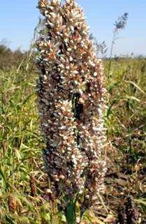
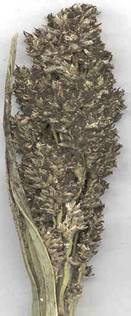
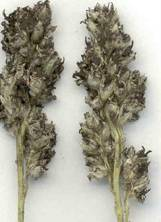
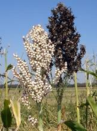
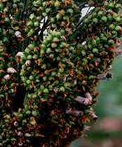
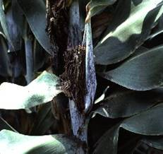

SORGHUM :: MAJOR DISEASE :: GRAIN SMUT / KERNEL SMUT / COVERED SMUT / SHORT SMUT
Grain smut/Kernel smut / Covered smut / Short smut - Sphacelotheca sorghi
Symptoms
The individual grains are replaced by smut sori. The sori are oval or cyclindrical and are covered with a tough creamy skin (peridium) which often persists unbroken up to thrashing. Ratoon crops exhibit higher incidence of disease.
{kind=link}
|  |  |
Symptoms |
|
Loose smut/ kernel smut - Sphacelotheca cruenta
Symptoms
The affected plants can be detected before the ears come out. They are shorter than the healthy plants with thinner stalks and marked tillering. The ears come out much earlier than the healthy. The glumes are hypertrophied and the earhead gives a loose appearance than healthy. The sorus is covered by a thin membrane which ruptures very early, exposing the spores even as the head emerges from the sheath.
{kind=link}
|  |  |
Symptoms |
|
Long smut - Tolyposporium ehrenbergii
Symptoms
This disease is normally restricted to a relatively a small proportion of the florets which are scattered on a head. The sori are long, more or less cylindrical, elongated, slightly curved with a relatively thick creamy-brown covering membrane (peridium). The peridium splits at the apex to release black mass of spores (spore in groups of balls) among which are found several dark brown filaments which represent the vascular bundles of the infected ovary.
|  |
Symptoms |
Head smut - Sphacelotheca reiliana
Symptoms
The entire head is replaced by large sori. The sorus is covered by a whitish grey membrane of fungal tissue, which ruptures, before the head emerges from the boot leaf to expose a mass of brown smut spores. Spores are embedded in long, thin, dark colored filaments which are the vascular bundles of the infected head.
|  |
Symptoms |
Management for all smuts
- Treat the seed with Captan or Thiram at 4 g/kg.
- Use disease free seeds.
- Follow crop rotation.
- Collect the smutted ear heads in cloth bags and bury in soil.